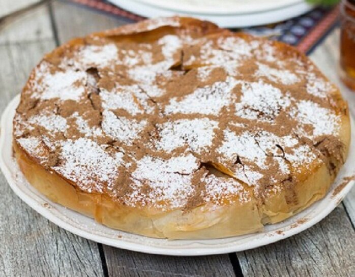

Moroccan Pastilla

Description:
ts name comes from the Spanish word for pastry, pastilla (pronounced pas-tee-yah)! Pastilla is a rustic, sweet-and-savory North African chicken pie
made of a tender shredded chicken filling and shaved almonds,
seasoned with warm spices (including Ras El Hanout), and nestled in layers of flaky phyllo pastry. It tastes just as good as it sounds, and it's easier to make than most people think!
Ingredients:
- Boneless, skinless chicken thighs
- Extra virgin olive oil
- Sliced yellow onion and minced garlic
- Pitted medjool dates, chopped
- Toasted sliced almonds
- Fresh parsley
- Eggs
- Spices for Moroccan bastilla filling
- Phyllo dough
Steps:
- After patting the 2 pounds of boneless, skinless chicken thighs dry, season both sides with kosher salt and black pepper.
- Heat 2 tablespoons EVOO in a pan over medium-high heat, and sear the chicken on both sides. Remove from the pan and set aside.
- Drizzle more extra virgin olive oil if necessary, and add 1 sliced onion and 2 cloves minced garlic. Season with kosher salt and cook until the onion has softened.
- Carefully shred the chicken into pieces.
- To the pan of liquid, gently stir in the 3 beaten eggs.
- Add the chicken back to the pan. Stir in the chopped dates, toasted almonds, and fresh parsley, and remove from the heat.
- Arrange the phyllo dough in the skillet.
- Add the chicken mixture to the skillet.
- Fold the hanging phyllo pieces over to cover.
- On the center rack of a 375 degrees F heated oven, bake the pie for 15 to 20 minutes.
- Remove and use a sieve to sprinkle some powdered sugar over the top of the pie.
- Serve immediately.